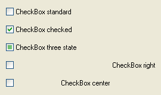

CheckBoxGadget()
语法
Result = CheckBoxGadget(#Gadget, x, y, Width, Height, Text$ [, Flags])概要
Create a checkbox gadget in the current GadgetList.
参数
#Gadget A number to identify the new gadget. #PB_Any can be used to auto-generate this number. x, y, Width, Height The position and dimensions of the new gadget. Text$ The text to display next to the checkbox. Flags (optional) Flags to modify the gadget behavior. It can be a combination of the following constants: #PB_CheckBox_Right : Aligns the text to right. #PB_CheckBox_Center : Centers the text. #PB_CheckBox_ThreeState: Create a checkbox that can have a third "in between" state.The #PB_CheckBox_ThreeState flag can be used for a checkbox that represents the state of multiple items. The "in between" state can then be used to indicate that the setting is not the same for all items. By clicking on the checkbox, the user can bring it back to either the "on" or "off" state to apply this to all the items. Therefore the "in between" state can only be set by the program via SetGadgetState() and not by the user by clicking on the checkbox.
返回值
Returns nonzero on success and zero on failure. If #PB_Any was used as the #Gadget parameter then the return-value is the auto-generated gadget number on success.
备注
A 'mini help' can be added to this gadget using GadgetToolTip().
- GetGadgetState() can be used to get the current gadget state.
- SetGadgetState() can be used to change the gadget state.
示例
If OpenWindow(0, 0, 0, 270, 160, "CheckBoxGadget", #PB_Window_SystemMenu | #PB_Window_ScreenCentered) CheckBoxGadget(0, 10, 10, 250, 20, "CheckBox standard") CheckBoxGadget(1, 10, 40, 250, 20, "CheckBox checked"): SetGadgetState(1, #PB_Checkbox_Checked) CheckBoxGadget(2, 10, 70, 250, 20, "CheckBox three state", #PB_CheckBox_ThreeState): SetGadgetState(2, #PB_Checkbox_Inbetween) CheckBoxGadget(3, 10, 100, 250, 20, "CheckBox right", #PB_CheckBox_Right) CheckBoxGadget(4, 10, 130, 250, 20, "CheckBox center", #PB_CheckBox_Center) Repeat : Until WaitWindowEvent() = #PB_Event_CloseWindow EndIf

参阅
GetGadgetState(), SetGadgetState(), OptionGadget()
已支持操作系统
所有